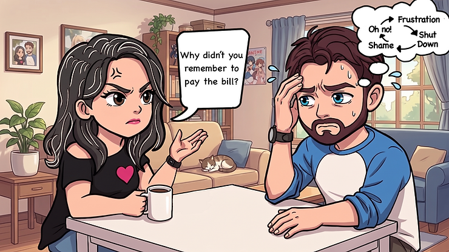

Living With ADHD in Relationships
Most articles about ADHD and relationships are written for your partner. They explain what it's like to live with you. They offer tips on patience and communication and managing expectations. They tell the other person how to cope.
This isn't that article.
This one is for you. The person with ADHD who is trying. Who has always been trying. Who forgets things and misses things and says the wrong thing at the wrong moment, and then lies awake afterward running the replay over and over. Who loves deeply and still, somehow, keeps dropping the ball.
You deserve a space to be seen and understood too. So let's start there.
The Loop That's Hard to Escape
If you've been in a relationship for any length of time with ADHD, you probably know this loop.
You forget something important. Maybe it's an anniversary, maybe it's a task you promised to do weeks ago, maybe it's just that you checked out mid-conversation and they noticed. It doesn't matter what it is. What matters is that familiar feeling that follows: that look on your partner's face. The one that's not quite anger yet, but it's getting there.
And then the shame kicks in.
Shameful thoughts move fast. "Here we go again." "Why can't I just remember?" "I knew I was going to mess this up." Within seconds you're not just responding to the current moment; you're responding to every moment like it that has ever happened before.
From there, most of us go one of two directions. We either overcorrect, apologizing profusely, promising to do better, taking on more to make it right, trying to fix it immediately with the exact kind of hyperfocus that was mysteriously absent when we needed it. Or we shut down entirely. Walls up. Conversation over. Internal monologue running hot.
Neither of those responses actually helps. And neither of them is really you. They're your nervous system responding to shame and threat, doing what it's wired to do. But when this loop plays out again and again in a relationship, it leaves damage in its wake. For you. For your partner. For both of you.
What the Research Says (And Why It Matters for How You See Yourself)
Here's some context that might be both validating and hard to sit with at the same time.
Studies show that up to 60% of adults with ADHD report serious relationship difficulties, including higher rates of separation and divorce. Research also shows that in many ADHD-affected relationships, the non-ADHD partner starts to feel like a parent tracking logistics, carrying the emotional labor, managing the household while their partner struggles to keep up.
That dynamic hurts both people. Your partner feels alone and exhausted. You feel like a disappointment. Neither of those things is the full truth, but they're what the unchecked ADHD dynamic produces when it goes unnamed and unaddressed.
Here's what I want you to take from that: these are patterns. They're common, well-documented patterns that have a neurological basis. They're not proof that you're a bad partner. They're not evidence that you don't care. And they're not permanent.
Understanding that the problem has a name, and that the name is not "I'm fundamentally broken," is where most meaningful change begins.
The Things You're Probably Not Saying Out Loud
There's a particular kind of loneliness that comes with having ADHD in a relationship. It's the loneliness of trying really hard and not having that effort seen. Because ADHD makes effort invisible in a way that almost nothing else does.
You thought about that task five times. You set a reminder. You genuinely intended to do it. And then something happened a distraction, a priority shift, your brain just not making the connection and you didn't do it. To your partner, it looks like you didn't care. To you, it looked like another failure at something other people seem to do automatically.
So let me name some things you might be carrying but not saying:
"I feel like a burden." The worry that the net effect of being with you is a harder life for the person you love.
"I'm afraid that if they really knew how hard I was trying, they'd be more frustrated, not less." Because trying this hard and still missing things is a vulnerable truth to share.
"I love them and I still can't seem to get it together." The specific grief of caring deeply and still falling short.
"I'm tired of apologizing for a brain I didn't choose." The quiet resentment that builds when shame is the only response available.
All of those are real. All of them make sense. And none of them mean the relationship is hopeless.
Emotional Dysregulation: The Hidden Relationship Wrecker
One piece of this that doesn't get enough attention is emotional dysregulation the way ADHD affects not just attention and executive function, but the intensity and speed of emotional responses.
For a lot of adults with ADHD, emotions hit fast and hard. A comment that might mildly bother someone else can feel devastating. A small frustration can escalate quickly. And the comedown from an emotional spike can take a while, even after the situation has resolved.
In a relationship context, this often shows up as conflict that feels disproportionate to what started it. Or as shutting down completely when things feel too overwhelming. Or as saying things in a heated moment that you genuinely regret.
This isn't a character flaw. The connection between emotional regulation centers and rational control in the ADHD brain is genuinely different. That doesn't make hurtful things okay. But it does mean that "just calm down" is about as useful as telling someone with a broken leg to just walk it off.
What does help is learning your own emotional patterns. Knowing what your early warning signs look like. Having a plan for what you do when you notice escalation starting. Not to eliminate the emotion emotions are information but to create a little more space between the feeling and the response.
What Actually Helps (That Isn't "Just Try Harder")
So what does move the needle? Here are a few things that genuinely make a difference, grounded in both research and the reality of living with an ADHD brain.
External systems over internal effort. The goal is to reduce the amount your relationship depends on your working memory and executive function. That's not giving up. That's smart design. Shared digital calendars, standing routines for recurring tasks, visual reminders in high-traffic areas these tools don't fix ADHD, but they reduce the number of things your brain has to hold at once, which reduces the number of things that fall through the cracks.
Communication that works with your brain, not against it. Timing matters a lot for ADHD brains. A conversation about something important right after a long, depleting workday is going to go worse than the same conversation on a Saturday morning when your nervous system has had some recovery time. It's not avoidance to ask for a better time. It's practical.
Knowing your regulation patterns. Learning what puts your nervous system into a threatened, dysregulated state and catching it earlier is one of the most valuable things you can do for your relationships. Not to suppress what you feel, but to respond rather than react.
Safe connection as a regulation tool. This is something a lot of people don't know: the nervous system actually regulates in the presence of safe, calm people. Coregulation is real. When your relationship feels like a safe harbor rather than a performance review, your ADHD brain actually functions better in it. Creating safety in the relationship isn't just emotionally nice. It's neurologically helpful.
Getting support for yourself. Coaching, therapy, or a community of people who understand what you're navigating these aren't things you pursue because your relationship is broken. They're things you pursue because you deserve to understand your own brain, and because you can't pour from an empty cup.
A Word on Shame
Shame is the thing that makes all of this harder than it has to be. And shame is unfortunately very common in adults with ADHD, especially those who were diagnosed late, after years of being told they were careless or lazy or dramatic or inconsiderate.
Here's what shame actually does: it narrows your attention, increases emotional reactivity, and reduces your capacity for exactly the things you're already struggling to do. Shame makes ADHD worse. It's not a motivator. It's not a corrective force. It just takes an already dysregulated nervous system and cranks the dial higher.
Healing in relationships often starts with reducing your own shame. Not by lowering your standards. Not by deciding that nothing matters. But by learning to separate your worth as a person and a partner from the symptoms of a neurodevelopmental condition you were born with.
You are not your missed tasks. You are not your late arrivals or your forgotten plans or your impulsive comments. Those things are part of your experience, and they're worth working on. But they're not the sum of who you are.
You Deserve to Be Understood
The relationship you want is possible. It doesn't require a perfect version of you. It requires a more informed version of you one who understands your own brain well enough to work with it, ask for what you need, and design systems that reduce the gap between your intentions and your actions.
That starts with you. And you don't have to figure it out alone.